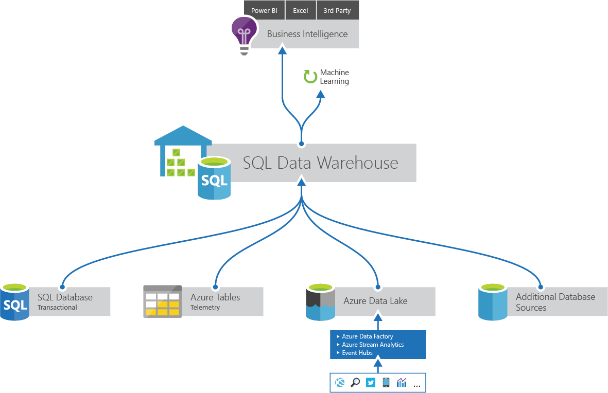

Azure Data Lake and Warehouse¶
Data Lack and Data Warehouse are two concepts causing confusion. This blog introduces these two concepts and provides comparision for other relevant concepts.
In general, there is a good article: https://www.talend.com/resources/data-lake-vs-data-warehouse/
Contents
Data Lake¶
Analyzing Big Data in Azure
Data Lake Store: No limits data Lake
Data Lake Aanlytics: Analytics job service
HDInsight: Managed clusters
Azure Data Lake Store¶
Hyper-scale repository for your big data analytics.
WebHDFS compatible
Any size
Any format as-is
Write-once-read-many
Enterprise-grade security
The big data store in Azure
Data lake store is mainly for cold data.
Azure Data Lake Analytics¶
Run big data analysis jobs that scale to massive data sets.
Run analytics jobs on managed clusters: No maintenance Serverless
Written in U-SQL: SQL Syntax and Extensibility in C#
Easily scaled with Analytics Units
Pay for processing time only
Data Sources
Built-in partitioned tables
Query data where it lives, No need to prepare data
One query that runs on multiple data stores
Use the correct data store for the job
Basic Data Lake Analytics process:
Create a Data Lake Analytics account.
Prepare the source data. Data Lake Analytics jobs can read data from either Azure Data Lake Store accounts or Azure Blob storage accounts.
Develop a U-SQL script.
Submit a job (U-SQL script) to the Data Lake Analytics account. The job reads from the source data, process the data as instructed in the U-SQL script, and then save the output to either a Data Lake Store account or a Blob storage account.
“Mastering Azure Analytics” by Zoiner Tejada: http://shop.oreilly.com/product/0636920050568.do
U-SQL Documentation: https://usql.io
U-SQL is a language that unifies the benefits of SQL with the expressive power of your own code to process all data at any scale. U-SQL’s scalable distributed query capability enables you to efficiently analyze data in the store and across relational stores such as Azure SQL Database. It enables you to process unstructured data by applying schema on read, insert custom logic and UDF’s, and includes extensibility to enable fine grained control over how to execute at scale.
Code example:
@searchlog =
EXTRACT UserId int,
Start DateTime,
Region string,
Query string,
Duration int?,
Urls string,
ClickedUrls string
FROM "/Samples/Data/SearchLog.tsv"
USING Extractors.Tsv();
OUTPUT @searchlog
TO "/Output/SearchLog-from-Data-Lake.csv"
USING Outputters.Csv();
Azure Data Lake GitHub Repo:
SQL Data Warehouse¶
Azure SQL Data Warehouse is a scale out database service designed to answer your ad hoc queries and questions. By spreading your data across distributions SQL Data Warehouse is designed for analytics at scale. To make the most of your database there are opportunities to tailor your table design and optimize for performance.
Built on SQL server engine. It is SQL on SQL.
PolyBase¶
Polybase is to simplfy and enable distributed analytics.
Polybase allows you to leverage your data from different sources by using familiar T-SQL commands. Polybase enables you to query non-relational data held in Azure Blob storage as though it is a regular table. Use Polybase to query non-relational data, or to import non-relational data into SQL Data Warehouse.
Practices¶
If the data is less than 1 TB, it is not a big data problem. Use SQL server directly.
You can pause the data warehouse, then not charge anymore
Distribution mode: round_robin(random), or on a key using hash. (check the row count to see whether the distribution is even)
OLAP and OLTP¶
Data Warehouse (or OLAP) workload is very different than online transaction processing (OLTP) workload with very different indexing strategy and data access pattern.
Unsuitable workloads: Operational workloads (OLTP)
High frequency reads & writes
Large numbers of singleton selects
High volumes of single row inserts
On the other hand, traditionally data warehouse workloads are write once and read many times.
Good links:
https://azure.microsoft.com/en-us/documentation/articles/sql-data-warehouse-load-polybase-guide/
Comparision¶
Data Warehousing vs Data Lakes¶
Data Warehousing
Structured data
Defined set of schemas
Requires Extract-Transform-Load (ET L) before storing
Exploratory analysis is hard because of transforming the data
Data Lakes
Raw data (unstructured/semi-structured/structured)
“Dump” all your data in the lake
Data scientists will interpret data from the lake
Without metadata, turns in a data swamp pretty fast
Azure Data Lake Store vs Blob Storage¶
No Limitations Store whatever you want in any format
Redundancy: It’s there but no control over it
Security Built-in Azure Active Directory support
Built for Scale Optimized for high- scale reads
Pricing More expensive than Storage GRS
Integration With Data Factory, Data Catalog & HDlnsight
Azure Data Lake Analytics vs HDInsight¶
HDInsight the developers need to care about the clusters.
Azure data lake analytics developers just like Uber -> USQL.
Very good support from Visual studio compared to hadoop, hive directly. Visual studio can support playback the execution.
Azure Data Lake vs Azure Data Factory¶
Azure Data Lake (ADL) makes processing Big Data simpler and more accessible by providing several key technologies. The U-SQL language is a powerful combination of SQL and C# that supports parallel execution.
Azure Data Factory (ADF) is a cloud-based data integration service that orchestrates and automate the movement and transformation of data.
create linked services, datasets, pipelines for source (blob), target (datawarehouse)
table and columns need to be setup in datawarehouse
The ADL-ADF integration allows you to:
Move data from a given source to the ADL store
Create BigData ADF pipelines that run U-SQL as a processing step on the ADL Analytics service
Learn more¶
Azure Data Architecture Guide
https://docs.microsoft.com/en-us/azure/architecture/data-guide/
Written by Binwei@Singapore